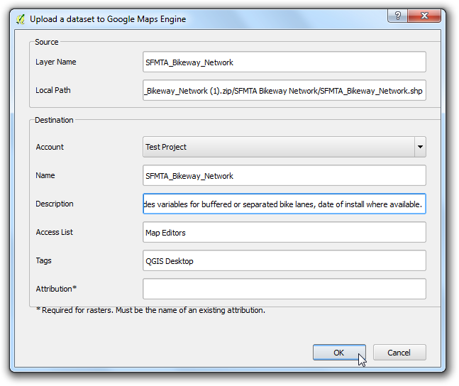

Monsters nemen van rastergegevens met behulp van punten of polygonen
[ Download PDF
A4
Letter ]
Vele wetenschappelijke en milieu-gegevenssets zijn gerasterde rasterafbeeldingen. Hoogtegegevens (DEM) worden ook gedistribueerd als rasterbestanden. In deze rasterbestanden wordt de parameter die wordt weergegeven gecodeerd als de pixelwaarden van het raster. Vaak moet men de pixelwaarden van bepaalde locaties verzamelen of ze samenvoegen over enkele gebieden. Deze functionaliteit is beschikbaar in QGIS via twee plug-ins - Point Sampling Tool en de plug-in Gebiedssstatistieken.
Overzicht van de taak
Gegeven een raster van maximum temperaturen in de VS, moeten we de temperatuur voor alle stedelijke gebieden uitnemen en ook de gemiddelde temperatuur berekenen voor elke county in de VS.
Andere vaardigheden die u zult leren
Procedure
Ga naar en blader naar het gedownloade bestand us.tmax_nohads_ll_{YYYYMMDD}_float.tif en klik op Openen.

Selecteer, als de laag eenmaal is geladen, het gereedschap Objecten identificeren en klik ergens op de laag. U zult de waarde van de temperatuur zien in Celsius als de waarde van Band 1 op die locatie.

Pak nu het gedownloade bestand 2013_Gaz_ua_national.zip uit en neem daaruit het bestand 2013_Gaz_ua_national.txt op uw schijf. Ga naar .

klik, in het dialoogvenster maak een kaartlaag uit een tekstgescheiden bestand op Bladeren en open 2013_Gaz_ua_national.txt. Kies Tab onder Zelfgekozen tekstscheiders. De puntcoördinaten staan in Latitude en Longitude, dus selecteer INTPTLONG als X-veld en INTPTLAT als Y-veld. Selecteer het vak Ruimtelijke index gebruiken en klik op OK.

Nu zijn we klaar om de waarden voorde temperatuur uit te nemen vanuit de rasterlaag. Installeer de plug-in Point Sampling Tool. Bekijk Plug-ins gebruiken voor details over hoe plug-ins te installeren.

Open het dialoogvenster voor de plug-in via .

Selecteer, in het dialoogvenster van Point Sampling Tool, 2013_Gaz_ua_national als de Layer containing sampling points. We moeten expliciet de velden kiezen uit de invoerlaag die we in de uitvoerlaag willen hebben. Kies de velden GEOID en NAME uit de laag 2013_Gaz_ua_national layer. We kunnen in één keer monsterwaarden uit meerdere rasterbanden halen, maar omdat ons raster slechts 1 band heeft, kies de us.tmax_nohads_ll_{YYYYMMDD}_float: Band 1. Noem de uitvoer-vectorlaag max_temparature_at_urban_locations.shp. Klik op OK om het proces van monsters nemen te beginnen. Klik op Close als het proces is voltooid.

U zult een nieuwe laag zien max_temparature_at_urban_locations, die is geladen in QGIS. gebruik het gereedschap Objecten identificeren om op een willekeurig punt te klikken om de attributen te zien. U zult het veld us.tmax_no zien - dat de pixelwaarde voor het raster op de locatie van het punt bevat.

Het eerste gedeelte van onze analyse is voltooid. Laten we de lagen die niet meer nodig zijn verwijderen. Houdt de Shift-toets ingedrukt en selecteer max_temparature_at_urban_locations en 2013_Gaz_ua_national layers. Klik met rechts en selecteer Verwijderen om ze uit de inhoudsopgave van QGIS te verwijderen.

Ga naar . Blader naar het gedownloade bestand tl_2013_us_county.zip en klik op Open. Selecteer tl_2013_us_county.shp als de laag en klik op OK.

Het bestand tl_2013_us_county zal worden toegevoegd aan QGIS. Deze laag staat in de projectie EPSG:4269 NAD83. Dat komt niet overeen met de projectie van de rasterlaag. We zullen deze laag opnieuw projecteren in de projectie EPSG:4326 WGS84.

Klik met rechts op de laag tl_2013_us_county en selecteer Opslaan als...

Klik, in het dialoogvenster Vectorlaag opslaan as.., op Bladeren en noem het uitvoerbestand counties.shp. Kies Geselecteerd CRS uit het keuzemenu CRS. Klik op Bladeren en selecteer WGS 84 als het CRS. Selecteer Voeg opgeslagen bestand toe aan kaart en klik op OK.

Een nieuw laag, genaamd counties, zal worden toegevoegd aan QGIS.

Schakel de plug-in Gebiedsstatistieken in. Dit is een bron plug-in dus die is al geïnstalleerd. Bekijk Plug-ins gebruiken om te weten te komen hoe bron plug-ins worden ingeschakeld.

Ga naar .

Selecteer us.tmax_nohads_ll_{YYYYMMDD}_float als de Rasterlaag en counties als de Polygoonlaag met zones. Voer ZS_ in als Voorvoegsel uitvoerkolom. Klik op OK.

De analyse kan enige tijd vergen, afhankelijk van de grootte van de gegevensset.

Selecteer de laag counties als het proces is voltooid. Gebruik het gereedschap Objecten identificeren en klik op een willekeurig polygoon van een county. U zult zien dat drie nieuwe attributen zijn toegevoegd aan de laag: ZS_count, ZS_mean en ZS_sum. Deze attributen bevatten respectievelijk het totaal aantal rasterpixels, de gemiddelde waarde van de rasterpixels, en de som van de waarden van de rasterpixels. Omdat we zijn geïnteresseerd in de gemiddelde temperatuur, is het veld ZS_mean het enige om te gebruiken.

Laten we deze laag opmaken een een kaart voor de temperatuur te maken. Klik met rechts op de laag counties en selecteer Eigenschappen.

Schakel naar de tab Stijl. Kies de stijl Gradueel en selecteer ZS_mean als de Kolom. Kies een Kleurverloop en Modus van uw keuze. Klik op Classificeren om de klassen te maken. Klik op OK. (Zie Basis opmaken van vectoren voor meer details over opmaken.)

U zult zien dat de polygonen van de counties zijn opgemaakt met behulp van de gemiddelde temperatuur die uit het raster is uitgenomen.